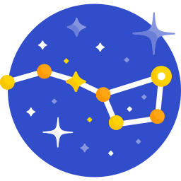

¡Hola, astronómico amigo!
¿Qué son las constelaciones?
Una constelación es una agrupación de distintas estrellas en una porción de la bóveda celeste, que en
apariencia
evoca una forma o una silueta determinada, a partir de la cual se le pone un nombre. Se trata de
asociaciones
completamente arbitrarias, que a menudo responden a figuras y símbolos provenientes de la cultura, y que por
lo
tanto varían de una sociedad a otra.

¿Cuántas constelaciones existen?
La Unión Astronómica Internacional, esa autoridad estelar, oficialmente reconoce 88 constelaciones en el
cielo
nocturno. Algunas de ellas fueron idea del antiguo matemágico Claudio Ptolomeo, quien allá por el 150 d.C.
se
puso creativo y trazó sus líneas estelares. Luego, unos cuantos siglos después, en los siglos XVI y XVIII,
se
sumaron 41 constelaciones adicionales, como si el cielo necesitara un poco más de pizzazz. Estas
constelaciones,
con sus historias y patrones únicos, son como las estrellas del espectáculo en el firmamento. ¡Brillante,
verdad?
¡Vamos a hacer un rápido recorrido por las constelaciones del hemisferio norte y sur!
Hemisferio Norte:
- Andrómeda: Aquí vemos a la princesa Andrómeda, rescatada por Perseo. ¡Es enorme y tiene 152 estrellas!
- Orión: Es como el guerrero de la antigua Grecia con su arma y escudo. Lo reconocerás por su cinturón de tres
estrellas. ¡Tiene 204 estrellas!
- Casiopea: Representa a la vanidosa Casiopea y su castigo. Tiene 157 estrellas y Tsih es la más brillante.
- Perseo: El héroe que venció a la Medusa y salvó a Andrómeda. Aquí llueven estrellas en las perseidas. Consta de
158 estrellas, siendo Mirfak la más brillante.
- Triángulo: Un triángulo en el cielo, ¡así de simple! Pero solo 25 estrellas aquí.
Hemisferio Sur:
- Crux: ¡La famosa "Cruz del Sur"! Siempre señala al Polo Sur. Tiene 49 estrellas, y Ácrux es la más
brillante.
- Can Mayor: El fiel perro de Orión. Contiene 147 estrellas, y Sirio es la superestrella aquí.
- Hidra: Un monstruo reptil de muchas cabezas. ¡Una constelación gigante con 238 estrellas, Alfard es la más
brillante!
- Corona del Sur: Representa la corona de laureles del sabio Quirón. Pequeña pero brillante, con 46 estrellas
y Beta coronae australis destacándose.